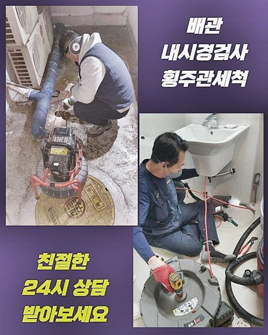
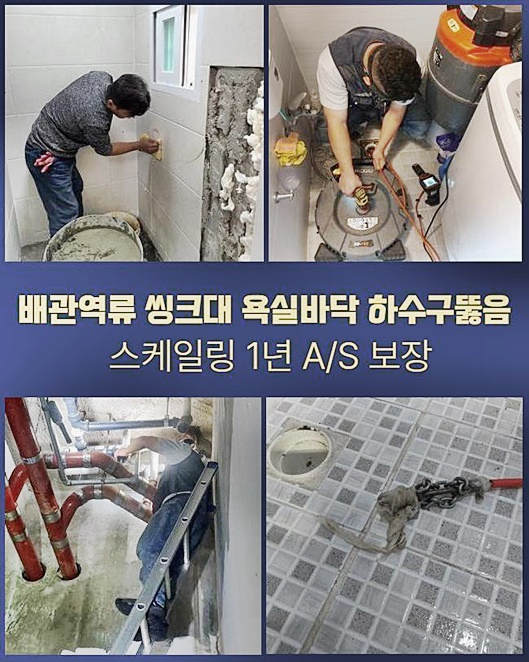
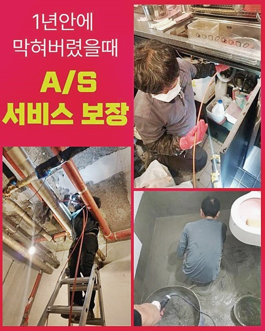
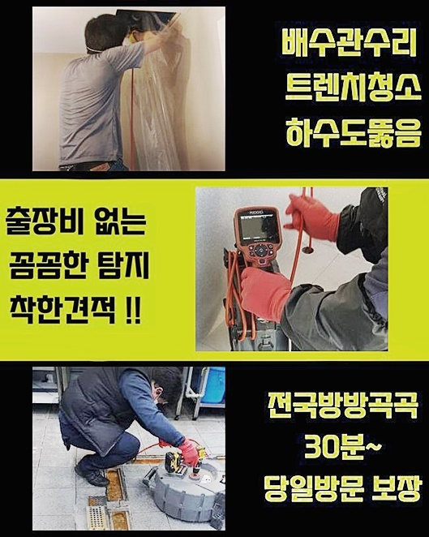
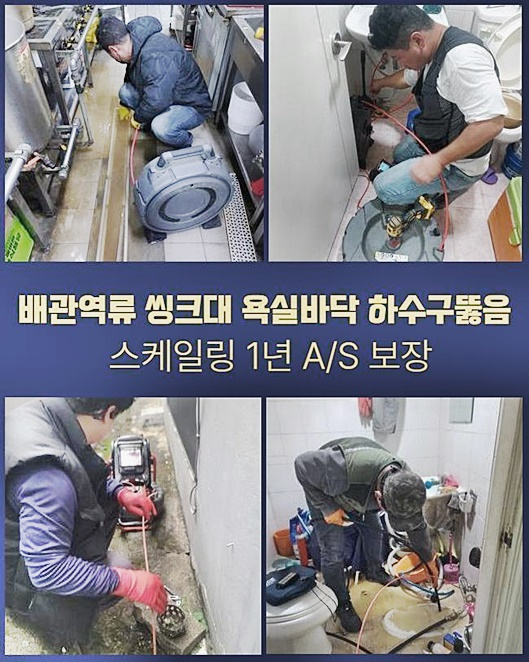
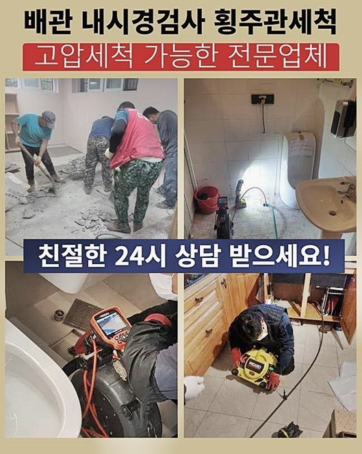

🏠 금천구 독산동화장실뚫음 시흥동 냄새차단 누수공사
시흥 배관막힘 전문 시공 후기

📋 작업 개요
- 위치: 시흥
- 서비스 유형: 배관막힘, 누수수리, 뚫는업체, 배관청소, 고압세척, 설비공사, 악취차단
- 작업 일시: 2024. 7. 7. 17:57
- 업체명: 하수구수사대 (010-5615-2118)
🔍 문제 상황
금천구 독산동화장실뚫음 시흥동 냄새차단 누수공사
여러사람이 쓰는 상가에서 오류가 발생되었다고 말씀해주셔서 방문을 드리게되었어요
확인해보니 물솟음이 야기되었고 바닥에는 하수들로 냄새의 문제도 있다고 말씀해주셨어요
별다른 조책없이 방임한다면 상태는 심각해지기에 신속히 고쳐내기위하여 방문을 드리게되었어요
저희전문진은 안전성을 갖춘 세척과 청소를 수행해서 해결들을 도와드립니다
뚫지못하면 수리비도 받고있지 않고 있으므로 고객들이 반드시 해결해내는 저희께 문의하십니다
처음엔 내시경장비로 군데군데 살펴야합니다 협소한 배관을 관찰할땐 내시경장치가 있어야합니다
내시경장치의 끝에는 렌즈들이 있어서 작업 시 안측을 확실하게 확인케하죠
내시경장치로 확인해보았더니 내측은 불그스름하게 변하게 된것을 보았는데 붉어진 잔해가 기름들이라고 생각하시면 되겠는데요
이는 곧 통수공간이 전혀 없는 상태에요
이러한 문제는 각 라인에서 빠지는 잔여물질들이 공동배수관으로 집결하며 찌꺼기까지 누적되는 탓에 상당수의 이물이 누적되면 문제들은 반드시 생겨나기 마련입니다
통수가 이뤄지지않을 시엔 여러방면에서 피해가 생기는 수 밖에 없죠
다양한 사람들이 사용해야되는 시설이라면 주기적인 점검을 거치고 청결하게 세척하며 사용해야 막힘에서 벗어나 지속적으로 쓰실 수 있으시답니다

🔎 원인 분석
💡 전문가 진단: 정밀 진단 장비를 사용하여 슬러지의 고착 여부를 판명하고 타격/세척 작업을 실시했습니다.
유분성분을 붓는다거나 음식물들의 잔재나 물티슈들과 같이 넣으면 안되는것을 투입시키지않고서 관리해주시면 이와같은 불미스러운 일이 발생되지 않아요
내부의 상태는 최악에 가까웠고 슬러지들이 대량이였던 모습이였어요
시발점을 찾으려고 트랩부분을 거쳐 구석구석 파악해가며 심층부도 관찰했는데요
원인에 대한 규명을 빈틈없이 못할 시 추후의 세척도 큰 효과가 없다 생각하시면 됩니다 우선시 되는건 올바른 시정이겠지만 청소과정을 진행시키고 똑같은 증상이 야기되지 않게끔 하는것이 각별히 신경써야할 점이죠
일시적인 해결을 한 뒤 철수하는게 아닌 추후에 이용하면서 증상이 야기되지않아야 의뢰인분들의 만족자체가 올라가죠
이곳의 경우 관리가 철저하게 이뤄지지못한 현장이였고 위생적이지 못하게 방치된것임을 알게되었죠
막혀버리는 결함이 정기적으로 발생하거나 심각하다면 청소들을 해주지않은 사례가 대다수에요
다수가 쓰기에 주기적인 청소를 때때로 신경써야하는데 인지를 못하신 것으로 파악되었어요
해당 세대의 배수관이 막혔을 시 대다수가 그 공간만의 결함일거라 생각하는데 사실 공동배수관까지 문제를 보이면 관련된 설비들에 증상을 불러일으켜요
이럴땐 경제적 지출도 커지게되고 걸리는 시간마저도 길어지게되서 고객의 불편들이 쌓이게됩니다
저희전문가들에게 호소를 하셨어요
보통 음식을 오수관으로 흐르게하는 분도 계시고 기름들도 싱크볼로 흘려보내세요
기름들은 싱크볼로 버리면 오류가 생기고 키친타올 등으로 닦고서 수습하셔야 하겠습니다

🔧 작업 과정
저희업체는 이와같은 한번 세척과 청소를 해드리고 휙 돌아서지 않고 일년간 애프터 서비스를 제공해드리므로 여러분들이 불안해하지않고서 쓰신다고 감사를 표하시기도 해요
저희업체는, 해결하는것이 1순위이나 작업계획 수행이 철저해야된다고 여기므로 성능 좋은 장치를 가용합니다
먼저 내시경도구를 대표로해서 흡입기와 샤프트장치에요 배관 관련 작업에 있어서 요구됩니다
샤프트장비는 머리쪽이 체인형태들로 이뤄져있으므로 굳은 이물들을 떨쳐내는데 최적화된 기기에요
고착물들과 벽에 붙어버린 슬러지들도 제거시켜요
이외에 석션장비는 흡입을 담당하여 부유물들을 세척시킵니다
세척을 할 때 빨아당겨 뚫어주는게 목표이기때문에 효과들도 뛰어납니다 우리들이 사용하고있는 청소기용품과 같다고 생각하시면 되죠
확실하게 작업하라면 작업의 과정들이 각별히 신경써야할 점이죠 문제의 근원부를 말끔하게 제거시키고 재발될 수 없도록 해주어야 됩니다
지금까지 노후된게 확인되었고 청소해주는데에도 난항이 예상되었는데요
위와같은 상황에서는 배수만 가능케하는게 아닌 고압노즐방식까지 철저하게 실시되야만 안전하고 추후에 문제도 발생되지 않아요
고압노즐분사기의 경우 라인을 결합하여 배관내부로 위치시켜 세척과정을 이행합니다
오수들로만 깔끔한 하수관로를 형성하기에 위험없이 운용되어지는 기기에요
고착된 잔해를 세척들을 해주는 고마운 녀석이죠
청결하게하는 기능도 겸비하고있기에 만족감은 더욱이 상승해요
전문가마다 수리하는 방법은 각각 차이를 보이는건 자명하나 눈여겨 봐야할 건 청소과정을 진행시키고 재발하는 사태가 되느냐 안 되느냐의 사항들로 생각해보시면 되요
저희전문진은 다양한 경험으로 해결책들을 함양했고 저희는 조속히 내방하여 조속히 수습가능합니다
지역따지지 않고 60분 내에 내방이 가능하여 필요로 하시는 의뢰인이 많으시답니다
막힘이 목격되면 누구나 당황하게되고 신속히 잠재우고싶은 생각뿐이실거에요
저희전문가가 다녀가고서 끝이아닌 1년의 시간에 걸쳐 AS를 해드리므로 안심하고 계셔도 좋아요
세대원이 주의사항등을 준수하면서 생활하면 염려하시는 일들은 발생되지 않겠습니다
개인만의 문제가 아니므로 다수가 협업하여 관리를 처리해주어야 되겠습니다


✅ 작업 완료
일정 구간이 이물이 쌓이면 이곳처럼 메인관로의 오류가 됩니다
이러한 까닭에 이상징후들이 발생되면 전문가를 찾아야겠습니다
최근들어 뚫기위하여 약품들만 구매하시는 의뢰자분이 늘어나고 있어요
해당 방식들이 의미없는건 아닌데 사용 후 효과들이 미미하면 깊숙한 곳까지 문제가 있는 경우일 가능성이 있어 신속히 전문가를 통해 고쳐나가야하겠습니다
작업이 끝나면 내시경기기로 이상이 없는지 보고 빈틈없이 막혀버린 사안이 정리되었다면 철수합니다
시정되지 못한 현장이라면 일체의 금액들을 받는 일이 없기에 주저없이 도움을 청해보세요!




⚠️ 베란다 누수 및 방수 관리 방법
- ✅ 비가 많이 올 때 창틀 주변이나 아래층 천장에 얼룩이 생기는지 정기적으로 확인해 보세요.
- ✅ 우수관 주변 실리콘 마감이 들뜨거나 깨진 틈새가 있는지 손상 여부를 수시로 체크하세요.
- ✅ 베란다 바닥 타일의 줄눈(메지)이 소실되면 그 틈으로 물이 침투하여 누수가 유발됩니다.
- ✅ 누수 의심 증상 발견 시 방치하면 아래층 손실이 커지므로 즉시 전문가의 진단을 받으십시오.
💡 핵심 정리
- 확실한 장비 작업(내시경 점검 및 샤프트 스케일링)으로 원인을 뿌리 뽑습니다.
- 작업 후 1년 이내에 동일한 부위 재발 시 100% 무상 A/S 서비스를 보장합니다.
- 서울 · 경기 · 인천 전 지역에 24시간 언제든 긴급 출동할 수 있도록 항시 대기 중입니다.
❓ 자주 묻는 질문 (FAQ)
🚨 시흥 배관막힘 문제로 고민이신가요?
정확한 원인 진단과 확실한 시공으로 재발 없는 해결을 약속드립니다.
24시간 긴급 출동 | 서울 · 경기 · 인천 전지역 | 1년 내 재발 시 무상 A/S